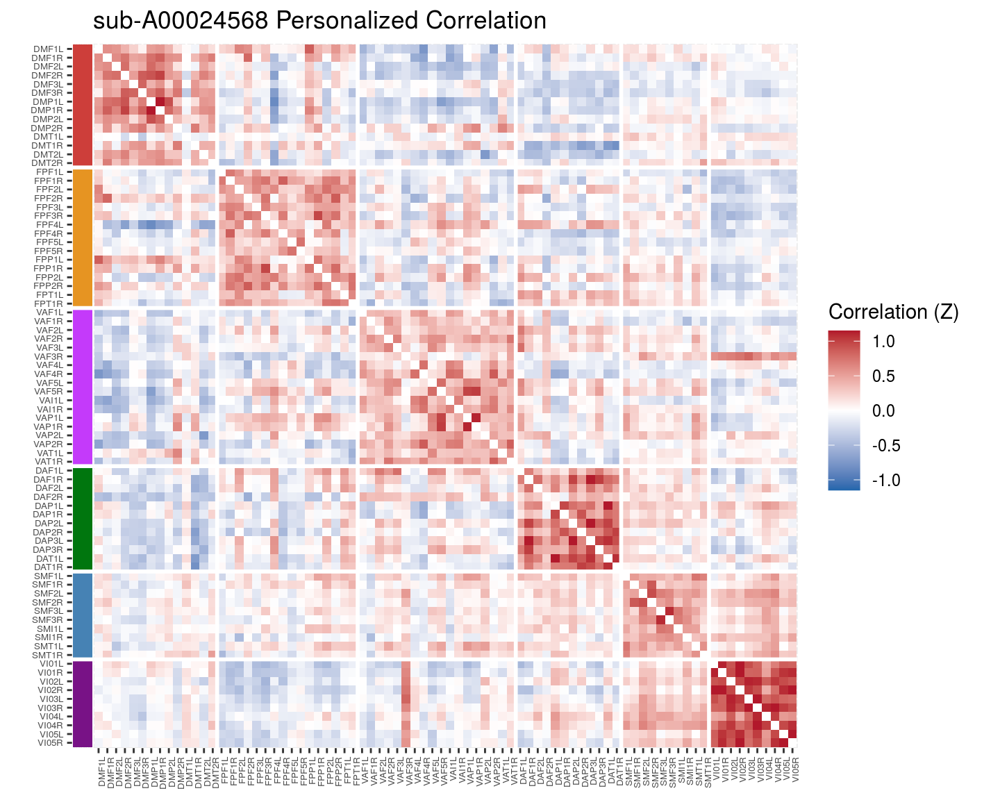

Chapter 10 Cortical-cortical results
Checking how the cortical-cortical stats change with adding surfaced based analyses and PINT
library(tidyverse)## ── Attaching packages ──────────────────────────────────────────────────────────────────────────────────────────────────────────────────── tidyverse 1.2.1 ──## ✔ ggplot2 3.1.0 ✔ purrr 0.2.5
## ✔ tibble 2.0.1 ✔ dplyr 0.8.0.1
## ✔ tidyr 0.8.2 ✔ stringr 1.3.1
## ✔ readr 1.3.0 ✔ forcats 0.3.0## ── Conflicts ─────────────────────────────────────────────────────────────────────────────────────────────────────────────────────── tidyverse_conflicts() ──
## ✖ dplyr::filter() masks stats::filter()
## ✖ dplyr::lag() masks stats::lag()library(broom)
library(knitr)
library(cowplot)##
## Attaching package: 'cowplot'## The following object is masked from 'package:ggplot2':
##
## ggsavelibrary(ggridges)##
## Attaching package: 'ggridges'## The following object is masked from 'package:ggplot2':
##
## scale_discrete_manuallibrary(igraph)##
## Attaching package: 'igraph'## The following objects are masked from 'package:dplyr':
##
## as_data_frame, groups, union## The following objects are masked from 'package:purrr':
##
## compose, simplify## The following object is masked from 'package:tidyr':
##
## crossing## The following object is masked from 'package:tibble':
##
## as_data_frame## The following objects are masked from 'package:stats':
##
## decompose, spectrum## The following object is masked from 'package:base':
##
## unionlibrary(here)## here() starts at /mnt/tigrlab/projects/edickie/code/SZ_PINTsource(here('code/R/settings_helpers.R'))
pheno <- read_pheno_file()## Parsed with column specification:
## cols(
## .default = col_double(),
## dataset = col_character(),
## subject_id = col_character(),
## session_id = col_character(),
## task_id = col_character(),
## run_id = col_character(),
## acq_id = col_character(),
## subject = col_character(),
## session = col_character(),
## cmh_session_id = col_character(),
## DX = col_character(),
## Sex = col_character(),
## Site = col_character(),
## Scanner = col_character(),
## isFEP = col_character(),
## ghost_NoGhost = col_character(),
## filename = col_character()
## )## See spec(...) for full column specifications.#YeoNet_colours <- define_YeoN7_colours()
Yeo7_2011_80verts <- read_Yeo72011_template()
#the_subcortical_guide <- get_subcortical_guide()
node_annotations <- get_node_annotations(read_Yeo72011_template(), get_subcortical_guide())## Parsed with column specification:
## cols(
## subcort_hemi = col_character(),
## subcort_ROI = col_character(),
## numvx = col_double(),
## network = col_character()
## )source(here('code/R/file_reading_helpers.R'))
source(here('code/R/custom_plot_helpers.R'))pheno <- pheno %>%
mutate(func_base = get_func_base_from_pint_summary_filename(filename,subject, session),
outputprefix = construct_output_prefix(subject, session, func_base)) map2(pheno$outputprefix[1], pheno$dataset[1],
~run_read_all_subject_timeseries_and_cortcort_corZ(.x, .y))all_corZ_results <- pheno %>%
select(subject, outputprefix, dataset) %>%
mutate(the_corrs = map2(.$outputprefix, .$dataset,
~run_read_all_subject_timeseries_and_cortcort_corZ(.x, .y)))#' go uppertri data to full dataframe for geom_tile
uppertri_df_to_full <- function(graph_df) {
# converts from three col graph df to adjacency matrix
uppertri_df_to_agjmat <- function(graph_df) {
names(graph_df) <- c('to', 'from', 'myattr')
matrix_out <- graph_df %>%
graph_from_data_frame(.,directed = F) %>%
get.adjacency(., type = "both", attr = "myattr") %>%
as.matrix()
return(matrix_out)
}
result <- graph_df %>%
uppertri_df_to_agjmat() %>%
as.data.frame() %>%
mutate(to = row.names(.)) %>%
gather(from, value, -to)
return(result)
}mean_cors <- all_corZ_results %>%
unnest() %>%
group_by(vertex_type, to, from) %>%
summarise(mcorZ = mean(weight))mean_cors %>%
filter(vertex_type == "pvertex") %>%
withincortical_heatmap("Personalized Mean Correlation", mcorZ) %>%
ggdraw()## Warning in as.numeric(network) %>% diff() * 1:80: longer object length is
## not a multiple of shorter object length
mean_cors %>%
filter(vertex_type == "tvertex") %>%
withincortical_heatmap("Surface Template Mean Correlation", mcorZ) %>%
ggdraw()## Warning in as.numeric(network) %>% diff() * 1:80: longer object length is
## not a multiple of shorter object length
mean_cors %>%
filter(vertex_type == "tvolume") %>%
withincortical_heatmap("Volume Template Mean Correlation", mcorZ) %>%
ggdraw()## Warning in as.numeric(network) %>% diff() * 1:80: longer object length is
## not a multiple of shorter object length
thissubject = unique(pheno$subject)[2]
this_results_pheno <- all_corZ_results %>%
filter(subject==thissubject) %>%
unnest()
this_results_pheno %>%
filter(vertex_type == "pvertex") %>%
withincortical_heatmap(str_c(thissubject, " Personalized Correlation")) %>%
ggdraw()## Warning in as.numeric(network) %>% diff() * 1:80: longer object length is
## not a multiple of shorter object length
this_results_pheno %>%
filter(vertex_type == "tvertex") %>%
withincortical_heatmap(str_c(thissubject, " Surface Template Correlation")) %>%
ggdraw()## Warning in as.numeric(network) %>% diff() * 1:80: longer object length is
## not a multiple of shorter object length
this_results_pheno %>%
filter(vertex_type == "tvolume") %>%
withincortical_heatmap(str_c(thissubject, " Volume Template Correlation")) %>%
ggdraw()## Warning in as.numeric(network) %>% diff() * 1:80: longer object length is
## not a multiple of shorter object length
thissubject = unique(pheno$subject)[3]
this_results_pheno <- all_corZ_results %>%
filter(subject==thissubject) %>%
unnest()
this_results_pheno %>%
filter(vertex_type == "pvertex") %>%
withincortical_heatmap(str_c(thissubject, " Personalized Correlation")) %>%
ggdraw()## Warning in as.numeric(network) %>% diff() * 1:80: longer object length is
## not a multiple of shorter object length
this_results_pheno %>%
filter(vertex_type == "tvertex") %>%
withincortical_heatmap(str_c(thissubject, " Surface Template Correlation")) %>%
ggdraw()## Warning in as.numeric(network) %>% diff() * 1:80: longer object length is
## not a multiple of shorter object length
this_results_pheno %>%
filter(vertex_type == "tvolume") %>%
withincortical_heatmap(str_c(thissubject, " Volume Template Correlation")) %>%
ggdraw()## Warning in as.numeric(network) %>% diff() * 1:80: longer object length is
## not a multiple of shorter object length
thissubject = unique(pheno$subject)[100]
this_results_pheno <- all_corZ_results %>%
filter(subject==thissubject) %>%
unnest()
this_results_pheno %>%
filter(vertex_type == "pvertex") %>%
withincortical_heatmap(str_c(thissubject, " Personalized Correlation")) %>%
ggdraw()## Warning in as.numeric(network) %>% diff() * 1:80: longer object length is
## not a multiple of shorter object length
this_results_pheno %>%
filter(vertex_type == "tvertex") %>%
withincortical_heatmap(str_c(thissubject, " Surface Template Correlation")) %>%
ggdraw()## Warning in as.numeric(network) %>% diff() * 1:80: longer object length is
## not a multiple of shorter object length
this_results_pheno %>%
filter(vertex_type == "tvolume") %>%
withincortical_heatmap(str_c(thissubject, " Volume Template Correlation")) %>%
ggdraw()## Warning in as.numeric(network) %>% diff() * 1:80: longer object length is
## not a multiple of shorter object length
10.1 To do - rainclouds for withing between changes in cortical cortical??
Need to start by calculating indvididual subject same and diff means by network
calc_wtn_and_cross_network_means <- function(graph_df, node_list) {
result <- graph_df %>%
# setup the data by switching from upper-tri to full
filter(to %in% node_list) %>%
filter(from %in% node_list) %>%
ungroup() %>%
select(to, from, weight) %>%
uppertri_df_to_full() %>%
# add columns we need to do the computation based on YeoNet7 naming convention..
mutate(to_network = str_sub(to, 1,2),
wtn_or_cross = if_else(to_network == str_sub(from,1,2),
"within", "cross")) %>%
# remove the same-edge bits
filter(to != from) %>%
# group_by and compute the means
group_by(to_network, wtn_or_cross) %>%
summarise(net_mean = mean(value))
return(result)
}
# define a vector of the cortical rois
cortical_rois <- node_annotations %>%
filter(etype == "Cort") %>%
pull(node_name)
# calculate all the subject-wise within and cross edge means
all_subject_wtn_cross_means <- all_corZ_results %>%
# slice(1) %>%
unnest() %>%
select(vertex_type, subject, dataset, to, from, weight) %>%
ungroup() %>%
group_by(vertex_type, subject, dataset) %>%
nest() %>%
mutate(net_means_res = map(data,
~calc_wtn_and_cross_network_means(
.x, cortical_rois))) %>%
unnest(net_means_res) #' Left section of the raincload plots used in sub-cortical cortical change reporting
samediff_cortcort_raincloud <- function(data, this_YeoNet, no_ticks = TRUE) {
## grab the color
this_YeoNet_color = YeoNet7 %>% filter(network==this_YeoNet) %>% pull(hexcode)
## make the plot
plt <- data %>%
mutate(corrtype = factor(vertex_type, levels = c('pvertex', 'tvertex', 'tvolume'),
labels = c("Surface Personalized", "Surface Template", "Volume Template"))) %>%
filter(to_network == this_YeoNet) %>%
ungroup() %>%
ggplot(aes(y = corrtype, x = net_mean, fill = wtn_or_cross, colour = wtn_or_cross)) +
geom_density_ridges(
#jittered_points = TRUE, position = "raincloud",
alpha = 0.5, scale = 2,
quantile_lines = TRUE, quantiles = 2
) +
geom_vline(xintercept = 0) +
scale_colour_manual(values = c("#808080", this_YeoNet_color)) +
scale_fill_manual(values = c("#808080", this_YeoNet_color)) +
scale_x_continuous(limits = c(-0.5, 1.5)) +
labs(y = NULL,
x = NULL) +
theme(legend.position='none')
if (no_ticks==TRUE) {
plt <- plt + theme(axis.title.x=element_blank(),
axis.text.x=element_blank())
} else {
plt <- plt + labs(x = "Correlation (Z)")
}
return(plt)
}
#' Combined subcortical-cortical correlation rainclouds for one subcortical structure
cortical_raincloud <- function(subject_focus, YeoNet7) {
DM <- samediff_cortcort_raincloud(subject_focus, "DM")
FP <- samediff_cortcort_raincloud(subject_focus, "FP")
VA <- samediff_cortcort_raincloud(subject_focus, "VA")
DA <- samediff_cortcort_raincloud(subject_focus, "DA")
SM <- samediff_cortcort_raincloud(subject_focus, "SM")
VI <- samediff_cortcort_raincloud(subject_focus, "VI", no_ticks = FALSE)
title <- ggdraw() + draw_label("Within Cortical", fontface='bold')
plt <- plot_grid(title, DM, FP, VA, DA, SM, VI,
ncol = 1, rel_heights = c(0.5, 1, 1, 1, 1, 1, 1.5))
return(plt)
}cortical_raincloud(all_subject_wtn_cross_means, YeoNet7)## Picking joint bandwidth of 0.0214## Picking joint bandwidth of 0.017## Picking joint bandwidth of 0.0184## Warning: Removed 1 rows containing non-finite values (stat_density_ridges).## Picking joint bandwidth of 0.0198## Warning: Removed 1 rows containing non-finite values (stat_density_ridges).## Picking joint bandwidth of 0.0239## Warning: Removed 2 rows containing non-finite values (stat_density_ridges).## Picking joint bandwidth of 0.0309## Warning: Removed 3 rows containing non-finite values (stat_density_ridges).